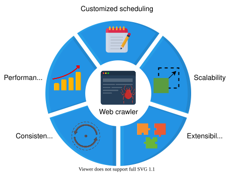
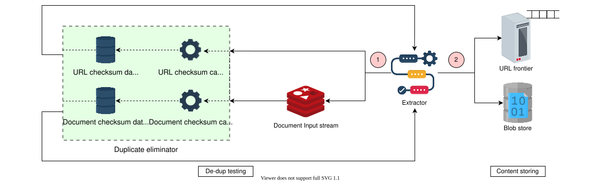
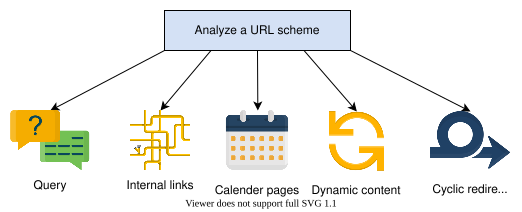
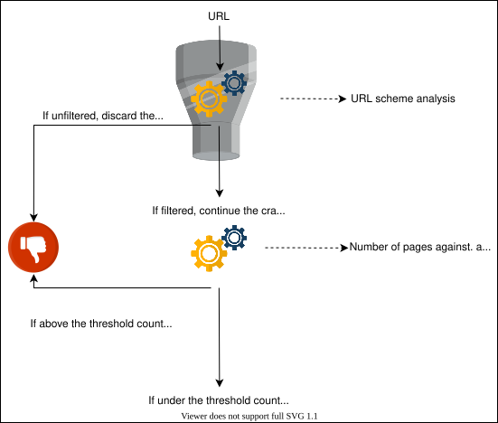

35. Design a Web Crawler
System Design: Web Crawler
System Design: Web Crawler
Learn about the web crawler service.
We'll cover the following
Introduction#
A web crawler is an Internet bot that systematically scours the world wide web (WWW) for content, starting its operation from a pool of seed URLs. This process of acquiring content from the WWW is called crawling. It further saves the crawled content in the data stores. The process of efficiently saving data for subsequent use is called storing.
This is the first step that’s performed by search engines; the stored data is used for indexing and ranking purposes. This specific design problem is limited to web crawlers and doesn’t include explanations of the later stages of indexing and ranking in the search engines.

Additional benefits#
The additional utilities of a web crawler are as follows:
-
Web pages testing: We use web crawlers to check the validity of the links and structures of web pages.
-
Web page monitoring: We use web crawlers to monitor the content or structure updates on web pages.
-
Site mirroring: Web crawlers are an effective way to mirror popular websites.
-
Copyright infringement check: Web crawlers fetch content and check for copyright infringement issues.
In this chapter, we’ll design a web crawler and evaluate how it fulfills the functional and non-functional requirements.
The output of the crawling process is the data that’s the input for the subsequent processing phases—data cleaning, indexing, page relevance using algorithms like page ranks, and analytics. To learn about some of these subsequent stages, refer to our chapter on distributed search.
How will we design a Web crawler?#
This chapter consists of four lessons that encompass the overall design of the web crawler system:
- Requirements: This lesson enlists the functional and non-functional requirements of the system and estimates calculations for various system parameters.
- Design: This lesson analyzes a bottom-up approach for a web-crawling service. We get a detailed overview of all the individual components leading to a combined operational mechanism to meet the requirements.
- Improvements: This lesson provides all the design improvements required to counter shortcomings, especially the crawler traps. These crawler traps include links with query parameters, internal links redirection, links holding infinite calendar pages, links for dynamic content generation, and links containing cyclic directories.
- Evaluation: This lesson provides an in-depth evaluation of our design choices to check if they meet all the standards and requirements we expect from our design.
Let’s begin with defining the requirements of a web crawler.
Requirements of a Web Crawler's Design
Requirements of a Web Crawler's Design
Learn about the design requirements of a web crawler.
Requirements#
Let’s highlight the functional and non-functional requirements of a web crawler.
Functional requirements#
These are the functionalities a user must be able to perform:
- Crawling: The system should scour the WWW, spanning from a queue of seed URLs provided initially by the system administrator.
Points to Ponder
Question 1
Where do we get these seed URLs from?
1 of 3
-
Storing: The system should be able to extract and store the content of a URL in a blob store. This makes that URL and its content processable by the search engines for indexing and ranking purposes.
-
Scheduling: Since crawling is a process that’s repeated, the system should have regular scheduling to update its blob stores’ records.
Non-functional requirements#
-
Scalability: The system should inherently be distributed and multithreaded, because it has to fetch hundreds of millions of web documents.
-
Extensibility: Currently, our design supports HTTP(S) communication protocol and text files storage facilities. For augmented functionality, it should also be extensible for different network communication protocols, able to add multiple modules to process, and store various file formats.
-
Consistency: Since our system involves multiple crawling workers, having data consistency among all of them is necessary.
-
Performance: The system should be smart enough to limit its crawling to a domain, either by time spent or by the count of the visited URLs of that domain. This process is called self-throttling. The URLs crawled per second and the throughput of the content crawled should be optimal.
- Improved user interface—customized scheduling: Besides the default recrawling, which is a functional requirement, the system should also support the functionality to perform non-routine customized crawling on the system administrator’s demands.

Resource estimation#
We need to estimate various resource requirements for our design.
Assumptions
These are the assumptions we’ll use when estimating our resource requirements:
- There are a total of 5 billion web pages.
- The text content per webpage is 2070 KB.
- The metadata for one web page is 500 Bytes.
Storage estimation#
The collective storage required to store the textual content of 5 billion web pages is: Total storage per crawl=5 Billion×(2070 KB+500B)=10.35PB
Traversal time#
Since the traversal time is just as important as the storage requirements, let’s calculate the approximate time for one-time crawling. Assuming that the average HTTP traversal per webpage is 60 ms, the time to traverse all 5 billion pages will be:
Total traversal time=5 Billion×60 ms=0.3 Billion seconds= 9.5 years
It’ll take approximately 9.5 years to traverse the whole Internet while using one instance of crawling, but we want to achieve our goal in one day. We can accomplish this by designing our system to support multi-worker architecture and divide the tasks among multiple workers running on different servers.
Number of servers estimation for multi-worker architecture#
Let’s calculate the number of servers required to finish crawling in one day. Assume that there is only one worker per server.
No. of days required by 1 server to complete the task=9.5 years×365 days≈3468 days
One server takes 3,468 days to complete the task.
How many servers would we need to complete this same task in one day?
We would need 3,468 servers to complete the same task in just one day.
Bandwidth estimation#
Since we want to process 10.35PB of data per day the total bandwidth required would be:
86400sec10.35PB≈120GB/sec≈960Gb/sec
960Gb/sec is the total required bandwidth. Now, assume that the task is distributed equally among 3468 servers to accomplish the task in one day. Thus, the per server bandwidth would be:
3468 server960Gb/sec≈277Mb/sec per server
Let's play around with the initial assumptions and see how the estimates change in the following calculator:
Estimates Calculator for the Web Crawler
| Number of Webpages | 5 | Billion |
| Text Content per Webpage | 2070 | KB |
| Metadata per Webpage | 500 | Bytes |
| Total Storage | f10.35 | PB |
| Total Traversal Time on One Server | f9.5 | Years |
| Servers Required to Perform Traversal in One Day | f3468 | Servers |
| Bandwidth Estimate | f958.33 | Gb/sec |
Building blocks we will use#
Here is the list of the main building blocks we’ll use in our design:
-
Scheduler is used to schedule crawling events on the URLs that are stored in its database.
-
DNS is needed to get the IP address resolution of the web pages.
-
Cache is utilized in storing fetched documents for quick access by all the processing modules.
-
Blob store’s main application is to store the crawled content.
Besides these basic building blocks, our design includes some additional components as well:
- The HTML fetcher establishes a network communication connection between the crawler and the web hosts.
- The service host manages the crawling operation among the workers.
- The extractor extracts the embedded URLs and the document from the web page.
- The duplicate eliminator performs dedup testing on the incoming URLs and the documents.

In the next lesson, we’ll focus on the high-level and detailed design of a web crawler.
Design of a Web Crawler
Design of a Web Crawler
Get an overview of the building blocks and components of the web crawler system, and learn about the interaction that takes place between them during the design process of a web crawler.
We'll cover the following
Design#
This lesson describes the building blocks and the additional components involved in the design and workflow of the web crawling process with respect to its requirements.
Components#
Here are the details of the building blocks and the components needed for our design:
-
Scheduler: This is one of the key building blocks that schedules URLs for crawling. It’s composed of two units: a priority queue and a relational database.
-
A priority queue (URL frontier): The queue hosts URLs that are made ready for crawling based on the two properties associated with each entry: priority and updates frequency.
-
Relational database: It stores all the URLs along with the two associated parameters mentioned above. The database gets populated by new requests from the following two input streams:
- The user’s added URLs, which include seed and runtime added URLs.
- The crawler’s extracted URLs.
-
Points to Ponder
Question 1
Can we estimate the size of the priority queue? What are the pros and cons of a centralized and distributed priority queue.
1 of 2
-
DNS resolver: The web crawler needs a DNS resolver to map hostnames to IP addresses for HTML content fetching. Since DNS lookup is a time-consuming process, a better approach is to create a customized DNS resolver and cache frequently-used IP addresses within their time-to-live because they’re bound to change after their time-to-live.
-
HTML fetcher: The HTML fetcher initiates communication with the server that’s hosting the URL(s). It downloads the file content based on the underlying communication protocol. We focus mainly on the HTTP protocol for textual content, but the HTML fetcher is easily extendable to other communication protocols, as is mentioned in the section on the non-functional requirements of the web crawler.
Question
How does the crawler handle URLs with variable priorities?
-
Service host: This component acts as the brain of the crawler and is composed of worker instances. For simplicity, we will refer to this whole component or a single worker as a crawler. There are three main tasks that this service host/crawler performs:
- It handles the multi-worker architecture of the crawling operation. Based on the availability, each worker communicates with the URL frontier to dequeue the next available URL for crawling.
- Each worker is responsible for acquiring the DNS resolutions of the incoming URLs from the DNS resolver.
- Each worker acts as a gateway between the scheduler and the HTML fetcher by sending the necessary DNS resolution information to the HTML fetcher for communication initiation.

-
Extractor: Once the HTML fetcher gets the web page, the next step is to extract two things from the webpage: URLs and the content. The extractor sends the extracted URLs directly and the content with the document input stream (DIS) to the duplicate eliminator. DIS is a cache that’s used to store the extracted document, so that other components can access and process it. Over here, we can use Redis as our cache choice because of its advanced data structure functionality.
Once it’s verified that the duplicates are absent in the data stores, the extractor sends the URLs to the task scheduler that contains the URL frontier and stores the content in blob storage for indexing purposes.
-
Duplicate eliminator: Since the web is all interconnected, the probability of two different URLs referring to the same web page or different URLs referring to various web pages having the same content is evident. The crawler needs a component to perform a dedup test to eliminate the risk of exploiting resources by storing and processing the same content twice. The duplicate eliminator calculates the checksum value of each extracted URL and compares it against the URLs checksum data store. If found, it discards the extracted URL. Otherwise, it adds a new entry to the database with the calculated checksum value.

The duplicate eliminator repeats the same process with the extracted content and adds the new webpage’s checksum value in the document checksum data store for future matchings.
Our proposed design for the duplicate eliminator can be made robust against these two issues:
- By using URL redirection, the new URL can pass through the URL dedup test. But, the second stage of the document dedup wouldn’t allow content duplication in the blob storage.
- By changing just one Byte in a document, the checksum of the modified document is going to come out different than the original one.
- Blob store: Since a web crawler is the backbone of a search engine, storing and indexing the fetched content and relevant metadata is immensely important. The design needs to have a distributed storage, such as a blob store, because we need to store large volumes of unstructured data.
The following illustration shows the pictorial representation of the overall web crawler design:

Workflow#
-
Assignment to a worker: The crawler (service host) initiates the process by loading a URL from the URL frontier’s priority queue and assigns it to the available worker.
-
DNS resolution: The worker sends the incoming URL for DNS resolution. Before resolving the URL, the DNS resolver checks the cache and returns the requested IP address if it’s found. Otherwise, it determines the IP address, sends it back to the worker instance of the crawler, and stores the result in the cache.
Point to Ponder
Question
Can we use DFS instead of BFS?
-
Communication initiation by the HTML fetcher: The worker forwards the URL and the associated IP address to the HTML fetcher, which initiates the communication between the crawler and the host server.
-
Content extraction: Once the worker establishes the communication, it extracts the URLs and the HTML document from the web page and places the document in a cache for other components to process it.
-
Dedup testing: The worker sends the extracted URLs and the document for dedup testing to the duplicate eliminator. The duplicate eliminator calculates and compares the checksum of both the URL and the document with the checksum values that have already been stored.
The duplicate eliminator discards the incoming request in case of a match. If there’s no match, it places the newly-calculated checksum values in the respective data stores and gives the go-ahead to the extractor to store the content.
-
Content storing: The extractor sends the newly-discovered URLs to the scheduler, which stores them in the database and sets the values for the priority and recrawl frequency variables.
The extractor also writes the required portions of the newly discovered document—currently in the DIS—into the database.
-
Recrawling: Once a cycle is complete, the crawler goes back to the first point and repeats the same process until the URL frontier queue is empty.
The URLs stored in the scheduler’s database have priority and periodicity assigned to them. Enqueuing new URLs into the URL frontier depends on these two factors.
Note: Because of multiple instances of each service and microservices architecture, our design can make use of client-side load balancing (see Client-side Load Balancer for Twitter).
The following slideshow gives a detailed overview of the web crawler workflow:
Point to Ponder
Question
How frequently does the crawler need to re-crawl?
In the next lesson, we’ll explore some shortcomings in our design and their potential workarounds.
Design Improvements of a Web Crawler
Design Improvements of a Web Crawler
Identify the web crawler's design shortcomings and challenges, and make improvements accordingly.
We'll cover the following
Introduction#
This lesson gives us a detailed rundown of the improvements that are required to enhance the functionality, performance, and security of our web crawler design. We have divided this lesson into two sections:
- Functionality and performance enhancement design improvements—extensibility and multi-worker architecture.
- Security-enhancement design improvements—crawler traps.
Let’s dive into these sections.
Design improvements#
Our current design is simplistic and has some inherent shortcomings and challenges. Let’s highlight them one by one and make some adjustments to our design along the way.
-
Shortcoming: Currently, our design supports the HTTP protocol and only extracts textual content. This leads to the question of how we can extend our crawler to facilitate multiple communication protocols and extract various types of files.
Adjustment: Since we have two separate components for serving communication handling and extracting, HTML Fetcher and Extractor, let’s discuss their modifications one by one.
- HTML Fetcher: We have only discussed the HTTP module in this component so far because of the widely-used HTTP URLs scheme. We can easily extend our design to incorporate other communication protocols like File Transfer Protocol (FTP). The workflow will then have an intermediary step where the crawler invokes the concerned communication module based on the URL’s scheme. The subsequent steps will remain the same.
- Extractor: Currently, we only extract the textual content from the downloaded document placed in the Document Input Stream (DIS). This document contains other file types as well, for example, images and videos. If we wish to extract other content from the stored document, we need to add new modules with functionalities to process those media types. Since we use a blob store for content storage, storing the newly-extracted content comprising text, images, and videos won’t be a problem.

-
Shortcoming: The current design doesn’t explain how the multi-worker concept integrates into this system.
Adjustment: Every worker needs a URL to work on from the priority queue. Different websites require different times for workers to finish crawling, so each worker will dequeue a new URL upon its availability.
There are several ways to achieve this multi-worker architecture for our system. Some of them are as follows:
-
Domain level log: The crawler assigns one whole domain to a worker. All the URLs branching out of the initial URL are the responsibility of the same crawler. We ensure this by caching the hash of the hostname against the worker ID for guaranteed future assignment to the same worker. This also helps us avoid any redundant crawling of that domain’s web pages by any worker.
This approach is best-suited for achieving reverse URL indexing, which involves traversing the web address directories in a reversed order. It ensures the storage efficiency of the URL storing process for later use and prevents extensive repetitive string matching processes for duplication testing.
-
Range division: The range of URLs given to each crawler; the crawler distributes a range of URLs from the priority queue among workers to avoid clashes. Like the previous approach, the crawler must hash the range associated with each worker.
-
Per URL crawling: Queue all the URLs; a worker takes a URL and enqueues the subsequently found URLs into the priority queue. Those new URLs are readily available to crawl through for other workers. To avoid enqueuing multiple similar links that direct to the same web page, we calculate the checksum of the canonicalized URL.
-
Crawler traps#
A crawler trap is a URL or a set of URLs that cause indefinite crawler resource exhaustion. This section dedicates itself to the classification, identification, and prevention of crawler traps.
Classification#
There can be many classification schemes for crawler traps, but let’s classify them based on the URL scheme.
Mostly, web crawler traps are the result of poor website structuring, such as:
- URLs with query parameters: These query parameters can hold an immense amount of values, all while generating a large number of useless web pages for a single domain:
HTTP://www.abc.com?query. - URLs with internal links: These links redirect in the same domain and can create an infinite cycle of redirection between the web pages of a single domain, making the crawler crawl the same content over and over again.
- URLs with infinite calendar pages: These have never-ending combinations of web pages based on the varying date values, and can create a large number of pointless web pages for a single domain.
- URLs for the dynamic content generation: These are query-based and can generate a massive number of web pages based on the dynamic content resulting from these queries. Such URLs might become a never-ending crawl on a single domain.
- URLs with repeated/cyclic directories: They form an indefinite loop of redirections. For example,
HTTP://www.abc.com/first/second/first/second/....

Mostly, the crawler traps are unintended because of the poor structuring of the website. Interestingly, crawler traps can also be placed intentionally to dynamically generate an endless series of web pages with the pure purpose of exhausting a crawler’s bandwidth. These traps severely impact the throughput of a crawler and hamper its performance.
These crawler traps might be detrimental to the crawler, but they also seriously affect the website’s SEO ranking.
Identification#
It’s essential to categorize the crawling traps to correctly identify them and think of design adjustments accordingly.
There are mainly two layers to the process of identifying a crawler trap:
-
Analyzing the URL scheme: The URLs with a poor URL structure, for example, those with cyclic directories:
HTTP://www.abc.com/first/second/first/second/...will create crawler traps. Hence, filtering such URLs beforehand will rescue our crawler resources. -
Analyzing the total number of web pages against a domain: An impossibly large number of web pages against a domain in the URL frontier is a strong indicator of a crawler trap. So, limiting the crawl at such a domain will be of utmost importance.

Solution#
Our design lacks details on the responsible crawling mechanism to avoid crawler traps for the identifications described above.
Crawling is a resource and time-consuming task, and it’s of extreme importance to efficiently avoid crawler traps in order to achieve timely and helpful crawling. Once the crawler starts communicating with the server for downloading the web page content, there are multiple factors that it needs to take into consideration, mainly at the HTML-fetcher level. Let’s go over these factors individually.
-
The crawler must implement an application-layer logic to counter the crawler traps. This logic might be based on the observed number of web pages exceeding a specified threshold.
The crawler must be intelligent enough to limit its crawling at a specific domain after a finite amount of time or web page visits. A crawler should smartly exit a web page and store that URL as a no-go area for future traversals to ensure performance effectiveness.
-
When initiating communication with the web server, the crawler needs to fetch a file named
robots.txt. This file contains the dos and don’ts for a crawler listed by the web masters. Adhering to this document is an integral part of the crawling process. It also allows the crawler to access certain domain-specified web pages prioritized for crawling, without limiting its access to specific web pages.Another essential component of this document is the revisit frequency instructions for the crawler. A popular website might demand a frequent revisit, contrary to a website that rarely updates its content. This standard of websites communicating with the web crawlers is called the Robots Exclusion Protocol. This protocol prevents the crawlers from unnecessarily spending crawling resources on uncrawlable web pages.

The
robots.txtfile doesn’t protect crawlers from malicious or intended crawler traps. The other explained mechanisms must handle those traps.
- Since each domain has a limited incoming and outgoing bandwidth allocation, the crawler needs to be polite enough to limit its crawling at a specific domain. Instead of having a static crawl speed for every domain, a better approach is to adjust the crawl speed based on a domain’s Time to First Byte (TTFB) value. The higher the TTFB value, the slower the server. And so, crawling that domain too fast might lead to more time-out requests and incomplete crawling.
These modifications in the design will ensure a crawler capable of avoiding crawler traps and hence optimizing resources’ usage.
Evaluation of Web Crawler's Design
Evaluation of Web Crawler's Design
Evaluate the proposed design of the web crawler system based on the fulfillment of its non-functional requirements.
Reviewing design requirements#
Let’s evaluate how our design meets the non-functional requirements of the proposed system.
Scalability#
Our design states that scaling our system horizontally is vital. Therefore, the proposed design incorporates the following design choices to meet the scalability requirements:
-
The system is scalable to handle the ever-increasing number of URLs. It includes all the required resources, including schedulers, web crawler workers, HTML fetchers, extractors, and blob stores, which are added/removed on demand.
-
In the case of a distributed URL frontier, the system utilizes consistent hashing to distribute the hostnames among various crawling workers, where each worker is running on a server. With this, adding or removing a crawler server isn’t a problem.
Extensibility and modularity#
So far, our design is only focusing on a particular type of communication protocol: HTTP. But according to our non-functional requirements, our system’s design should facilitate the inclusion of other network communication protocols like FTP.
To achieve this extensibility, we only need to add additional modules for the newly required communication protocols in the HTML fetcher. The respective modules will then be responsible for making and maintaining the required communications with the host servers.
Along the same lines, we expect our design to extend its functionality for other MIME types as well. The modular approach for different MIME schemes facilitates this requirement. The worker will call the associated MIME’s processing module to extract the content from the document stored in the DIS.

Consistency#
Our system consists of several crawling workers. Data consistency among crawled content is crucial. So, to avoid data inconsistency and crawl duplication, our system computes the checksums of URLs and documents and compares them with the existing checksums of the URLs and documents in the URL and document checksum data stores, respectively.
Apart from deduplication, to ensure the data consistency by fault-tolerance conditions, all the servers can checkpoint their states to a backup service, such as Amazon S3 or an offline disk, regularly.
Performance#
Our web crawler’s performance depends on the following factors:
-
URLs crawled per second: We can improve this factor by adding new workers to the system.
-
Utilizing blob storage for content storing: This ensures higher throughput for the massive amount of unstructured data. It also indicates a fast retrieval of the stored content, because a single blob can support up to 500 requests per second.
-
Efficient implementation of the
robots.txtfile guideline: We can implement this performance factor by having an application-layer logic of setting the highest precedence ofrobots.txtguidelines while crawling. -
Self-throttling: We can have various application-level checks to ensure that our web crawler doesn’t hamper the performance of the website host servers by exhausting their resources.
Requirement | Techniques |
Scalability |
|
Extensibility and Modularity |
|
Consistency |
|
Performance |
|
Scheduling |
|
Scheduling#
As was established previously, we may need to recrawl URLs on various frequencies. These frequencies are determined by the application of the URL.We can determine the frequency of recrawl in two different ways:
-
We can assign a default or a specific recrawling frequency to each URL. This assignment depends on the application of the URL defining the priority. A default frequency is assigned to the standard-priority URLs and a higher recrawl frequency is given to the higher-priority URLs.
Based on each URL’s associated recrawl frequency, we can decide to enqueue URLs in the priority queue from the scheduler’s database. The priority defines the place of a URL in the queue.
-
The second method is to have separate queues for various priority URLs, use URLs from high-priority queues first, and subsequently move to the lower-priority URLs.
Conclusion#
The web crawler system entails a multi-worker design that uses a microservices architecture. Besides achieving the basic crawling functionality, our design provides insights into the potential shortcomings and challenges associated with our design and further rectifies them with appropriate design modifications. The noteworthy features of our design are as follows:
- Identification and design modification for crawler traps
- Extensibility of HTML fetching and content extraction modules